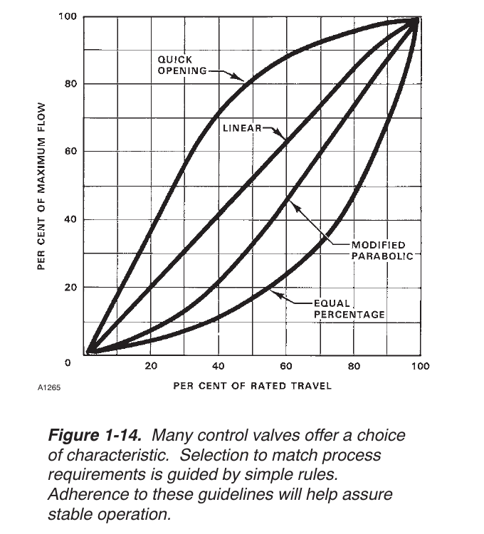

Rangeability, Body Style, and the Positioner Lever

- 1Quick-opening, linear, equal-percentage — the three shapes this course teaches (ch4-m1); the figure's own fourth curve, modified parabolic, sits between linear and equal-percentage and is not covered separately
- Rangeability — the ratio of maximum to minimum controllable flow — is a real selection input, not a footnote
- Rotary designs, especially partial-ball, generally deliver greater rangeability than sliding-stem globe trim
- A characterized positioner can partially make one inherent characteristic behave like another — bounded by the positioner's own frequency response and phase lag, and not universally beneficial (some high-gain processes are hindered by adding one)
- Neither lever changes the pressure-drop-ratio mechanism just taught — they change what's available to compensate with
After Fisher Control Valve Sourcebook — Power & Severe Service, 4th ed., Fig. 1-14 — used directly, own printed curve labels retained. Component Index: pss-cmp-flow-characteristic-curves.